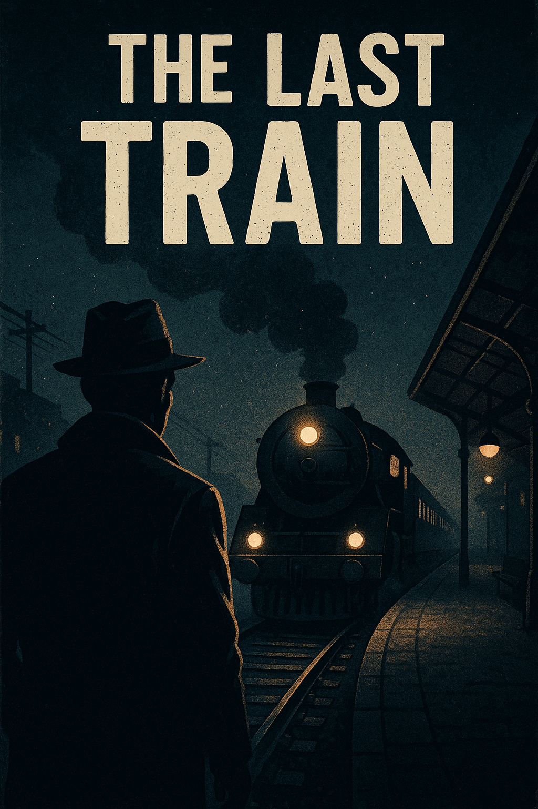
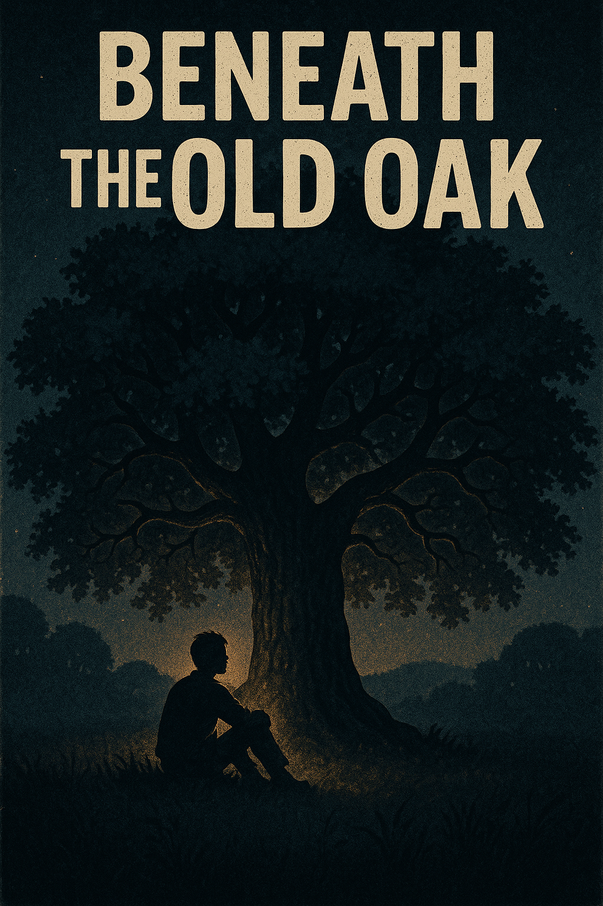
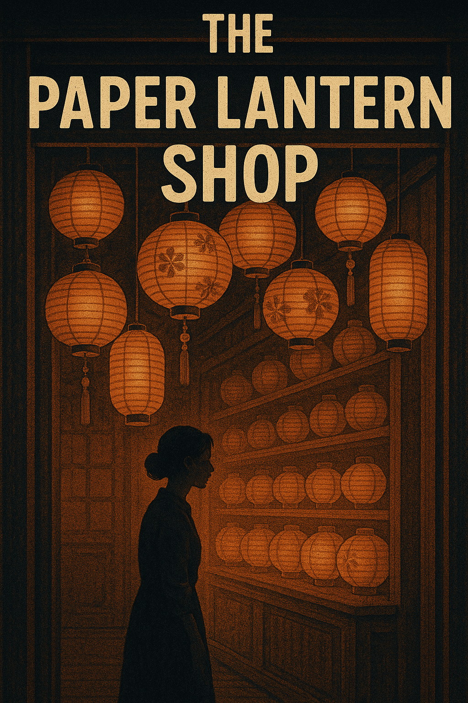

 The Last Train It was nearly midnight when Sarah stepped onto the empty platform, unaware that this journey would change her life forever... Read More
 Beneath the Old Oak Every summer afternoon, Daniel would sit beneath the towering oak, waiting for a letter that never came... Read More
 The Paper Lantern Shop In a narrow alley lit by rows of glowing paper lanterns, Mei discovered that the smallest shop could hold the biggest secrets... Read More